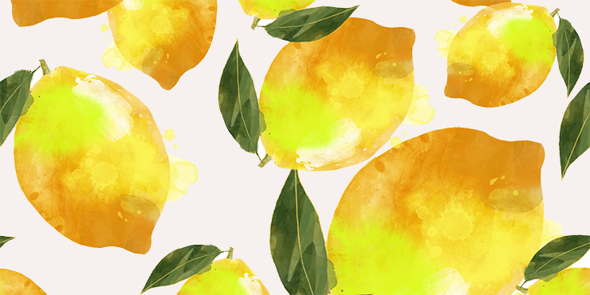

О компании
Наша компания уже более 100 лет занимается самыми актуальными и современными исследованиями лимонов. Среди наших сотрудников - профессиональные химики, инженеры-биологи и просто садоводы-энтузиасты.
Лимоны уже много лет волнуют науку своей загадочной сочностью и кислотой. Многие загадки скрывает этот фрукт под своей плотной ярко-жёлтой кожурой с интенсивным ароматом. Каждый лимон - рекордсмен по содержанию витаминов и прочих полезных любом организму веществ. Наша задача - составить максимально точную и подробную картину жизнеописания каждого лимона.
Лимон - в каждый дом!
Ежегодно, тысячи лимонов погибают, так не обретя крыши над собственной кроной. Некому надкусить округлый бочок, некому положить дольку в горячий и ароматный чай. Общество недооценивает глобальное влияние лимона на жизнь человека. Наши исследования показывают, как оказывает дйствие обычный лимон на развитие личности с 3 до 45 лет.
В природе, дикий лимон доживает лишь до 30-40 лет в среднем. Одомашнивание лимона удлиняет его жизненный цикл минимум на 30 лет, что позволяет дольше насладиться его плодами. Приручение и забота о лимоне весьма просты и незатейливы, но многие люди неуверенно принимают подарочные лимоны, боясь не справиться с грузом ответственности. Наши статьи помогут вам найти подход к каждому лимону. Вместе с вами мы вырастим здоровые и полезные плоды, шаг за шагом, наблюдая как росток развивается в дерево.
Будущее человечества и лимонов
Как известно, человечество обладает данными лишь о 20% лимонов на планете, остальная часть представляет собой необъятные просторы для научных изысканий и дарит нам перспективы многих удивительных открытий. Ежемесячно библиотека научных статей о лимонах расширяется, позволяя нам всё объёмнее рассмотреть феномен жёлтости и кислоты лимона. Обратите ваше внимание, на нашем портале - только информация, проверенная экспертами в данной области.
Смело рассказывайте знакомым всё, что вы узнали у нас - пусть ценителей лимонов становится всё больше и больше!